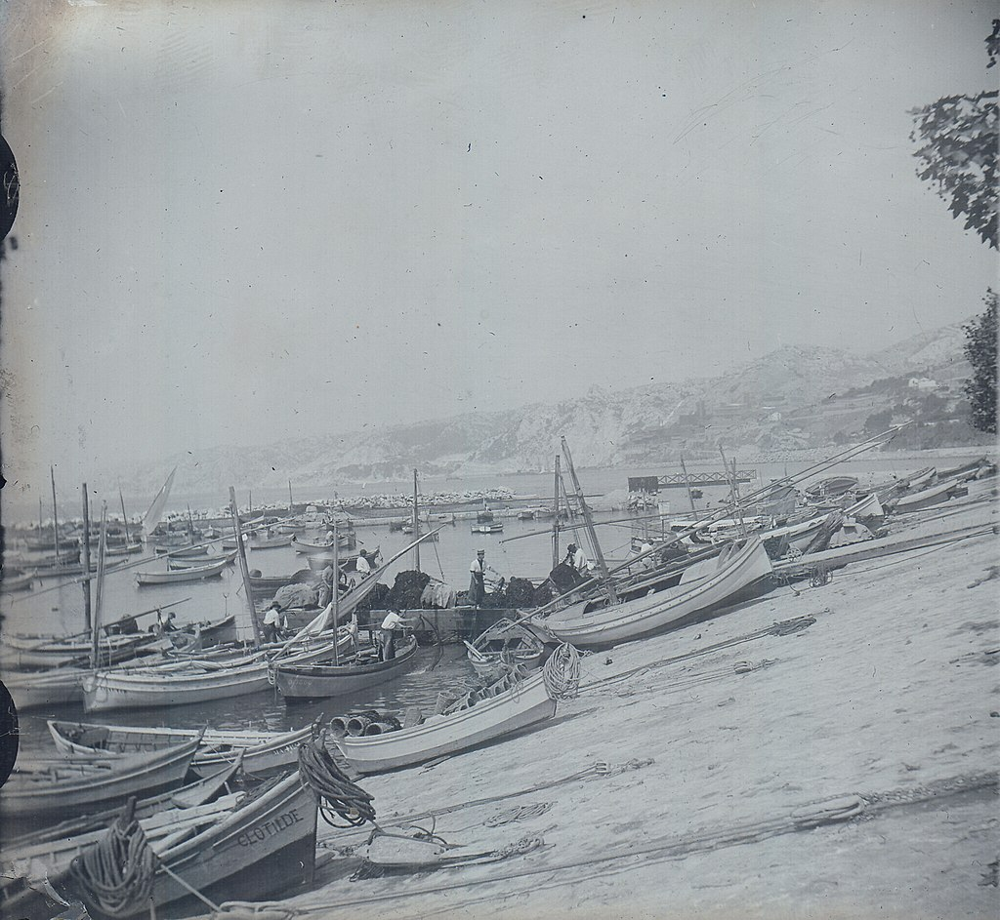

The cliffs and caves of L'Estaque were occupied by humans during prehistoric times, around the bed of rivers, “the riaux”, as evidenced by the remains found in the 19th and 20th centuries in two neighboring caves called Riaux 1 and Riaux 2, located about 60 meters above sea level. These archaeological sites have since been destroyed by urban expansion. Some traces of human activity dating from the Paleolithic (more exactly the Magdalenian, ie between 17,000 and 10,000 BC) have been found. They correspond to a so-called hunting and gathering period. Archaeologists, including Max Escalon de Fonton, have discovered cut flint (blades, scrapers), animal bones (ibex, lynx, bear, wolf), a necklace made of perforated shells.
The hamlet of fishermen and peasants :
L'Estaque is a former hamlet of fishing and farming families, which later became a village. Until the beginning of the 19th century, the dwellings were grouped together by the sea, along a jetty of rocks and sandbanks, in the current Estaque-Plage district. Its port is a natural haven sheltered from the winds and it served as a marine shelter or stopover for fishermen in the region.
Fishing activity :
Fishing at L'Estaque was based mainly on sardines, secondarily on tuna (seinche), mackerel, lobster and rock fish, then sea urchin, shrimp and shellfish. At least since the 18th century, fishermen have exploited a wet trap in the middle of L'Estaque cove, a fixed fishing net intended for tuna; the trap was dismantled in 1859 due to the decrease in catches (Niolon's trap remained until the middle of the 20th century).

The Second World War :
During World War II, the factories in L'Estaque were part of the German war effort. Some sabotage was carried out during the war, in particular "an arson at the Khulmann factory and two explosions of electrical transformers at that of the Colonial", but the neighboring factories and houses are also under the risk of Allied bombardments. As part of the Mediterranean wall strategy, casemates and anti-aircraft batteries had been built in the hills around L'Estaque, and the structures of the port of L'Estaque had been mined. On August 23, 1944, some Polish deserters hiding in L'Estaque were executed by the Germans. Following the Battle of Marseille, L'Estaque was liberated in August 1944 by Moroccan goumiers, who notably reduced the blockhouse on Boulevard Fenouil.
The years 1990-2000 :
From the 1950s, the northern districts of Marseille were severely affected by the economic recession, unemployment and the consequences of decolonization. The fishing activity and the tile industry disappeared from L'Estaque. The other industries (cement and chemicals) mainly employ unskilled labor, resulting from immigration. The workers crowd near their factories, in sometimes unsanitary housing; misery is such that appear